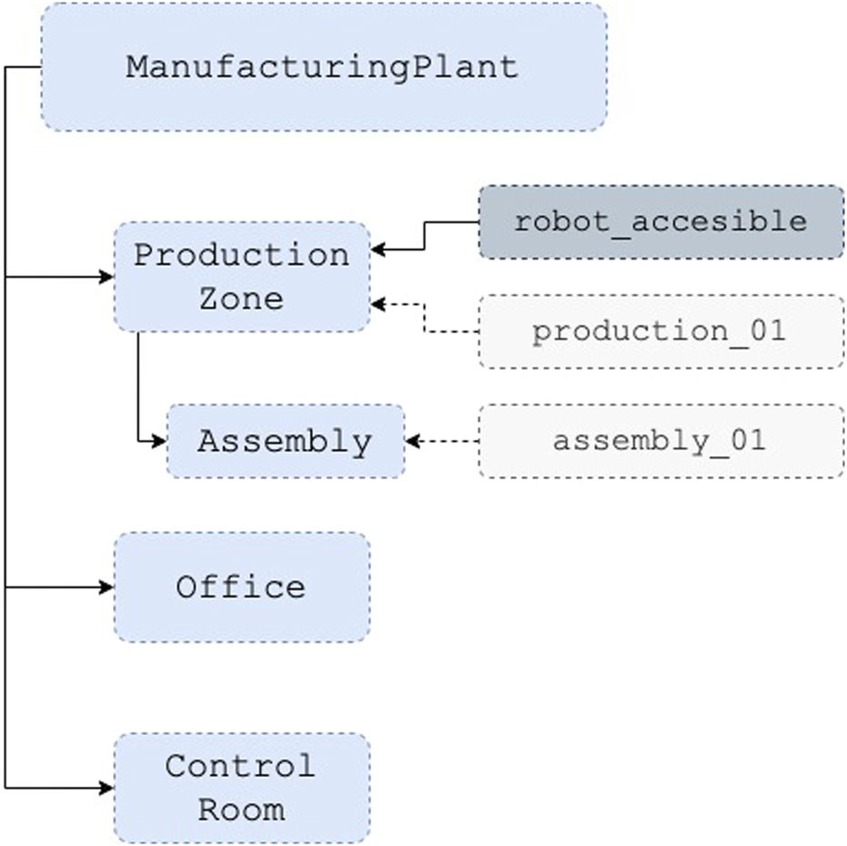
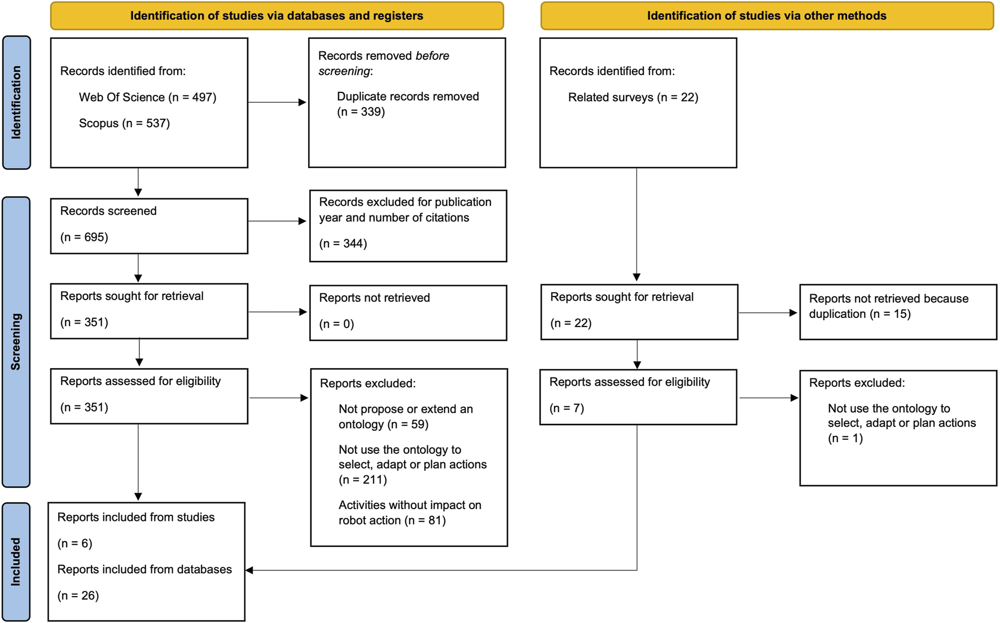

§030 秒速覽
五個數字抓骨架：篩選規模、框架數、能力覆蓋的落差、主流語言、公開程度
§1先備知識：本體論是什麼？
對應原文 §1、§4.2：知識表示與推理（KR&R）、類別、個體、屬性、繼承
「本體論」（ontology）原本是哲學名詞，在電腦科學裡意思很實際：一份機器讀得懂的「概念說明書」，寫清楚某個領域裡有哪些東西、它們之間有什麼關係。它有三種基本元素：
- 類別（class）：一群東西的名稱，例如「生產區」「杯子」「感測器」。
- 個體（individual／instance）：真實存在的某一個東西，例如「assembly_01 這塊組裝區」。
- 屬性與關係（property）：描述類別或個體的特徵，例如「機器人可進入」「位於」「是…的一部分」。類別之間還能有上下位關係：「組裝區是一種生產區」。
重點在於「推理」：只要寫下少數規則，推理器（reasoner）就能自動推出沒有人直接寫下的事實，並檢查知識有沒有自相矛盾。這個研究領域叫「知識表示與推理」（KR&R）Shapiro 2003。論文用一座工廠的區域當例子（原圖 2）：


這樣做有三個好處，也是論文在引言中強調的：
- 適應：程式設計者無法預先想到所有狀況；知識寫成規則，機器人可以在現場推出該怎麼做。
- 可解釋：人可以直接查詢知識庫，問機器人「為什麼不穿過辦公室」。
- 可重用：同一份「什麼是感測器、什麼是夾爪」的知識，可以給不同機器人、不同任務共用。
和它相對的是一般的程序式寫法：把每個行為用程式語言一步步寫死。實務上，成功的系統通常兩者混用：用宣告式知識描述「是什麼」，用程序式程式碼處理「怎麼做得快」Russell 2021。
延伸：換五個領域，再走一次這四步
圖 A 的四步不只適用於工廠。下面換五個領域各走一次，每個例子多帶一兩個後面會用到的觀念。例子是本站設計的示意，不是論文中的實驗。每張圖用同一套記號：實線框是寫下的概念，虛線框是放入的個體，灰色箭頭是寫下的關係，藍色是推理器推出的，橘框是決策，紅色是錯誤或故障。
也請留意：③ 不一定只靠「是一種」就推得出來。有些步驟要另外寫規則，有些其實是在已知資料裡查詢（封閉世界），圖說會註明。點開看圖。
例 1 廚房炒菜：一個類別可以有兩個父類別§3 §4 §7 §14
多學到：原圖 2 每個類別只有一個父類別（單一繼承）；實際的本體論常有多個父類別（多重繼承）。這個例子也剛好跨了 §3 的三層：加熱、烹調在 SUMO 的上層本體論（Merge.kif），炒在 SUMO 的食物領域檔；框裡那兩條本例規則屬於應用層（掛在加熱、烹調上，所以畫在那兩個框裡），event_42 這些個體則是這次任務放進知識庫的資料。§7、§8 的 PMK、OMRKF 另有一種「三層」（後設本體論、綱要、個體），別和這裡混在一起。
後面對應：§3 本體論的三個層次；§4 的「預測與監控」；§7 KnowRob 也是把寫在類別上的知識套到這一次的動作上：查到「倒」這個動作含有子任務「抓住來源容器」，再查抓取姿態與施力；§14（本站示範）用 SUMO 的料理類別定義 benchmark。
例 2 醫院送餐：查不到不等於沒有§2 §4 §14
多學到：要讓 OWL 推出「不含」，必須寫明「這道菜的成分只有這些」（封閉公理），還要說清楚這些成分都不是花生，比想像中麻煩。開放世界不是缺點：它不會把「沒登錄」當成「沒有」；代價是決策層要自己訂保守規則。
後面對應：§2 開放世界與封閉世界；§4 的「決策與規劃」；圖 A 第 ④ 步的白名單；§14（本站示範）盛盤驗收的「盤外沒有灑出」要用 SHACL、SPARQL 或程式在封閉世界下檢查，感知也要明確輸出「灑出面積＝0」，不能只是沒有回報。
例 3 礦坑探勘：機器人描述它自己§4 §8 §11 §12 §13
多學到：本體論不只描述外面的世界，也描述機器人自己的設計：哪個元件支撐哪個功能、還有哪些替代配置、誰在乎結果。作者認為多數框架缺的正是這種知識。
後面對應：§4 的「互動與設計」「預測與監控」「決策與規劃」「執行」；§8 TOMASys、圖 H 與原圖 3；§11 最深的一層應變（改機器人自己的配置、放寬目標）；§12 作者主張用工程模型支撐監控與協調；§13 作者群 2025 年的後續論文：採礦機器人上的實作。
例 4 人機協作桌：機器人替每個人各記一份知識§4 §9 §13
多學到：知識不只一份。機器人要同時存「我知道的」和「你知道的」，兩份可以互相矛盾，推理時要選對是哪一份。
後面對應：§4 的「溝通與協調」「感知與分類」；§9 ORO（每個人一個心智模型、找最能區分的特徵）與 OCRA（協作中改計畫，並能解釋原因）；§13 OCRA 團隊在綜述之後的對比式解釋。
例 5 回收產線換工具：能做什麼是推出來的§3 §4 §10 §12 §14
多學到：能做什麼是從「裝了什麼」推出來的，不是寫死在程式裡。但前提是大家用同一套詞彙：A 廠寫 VacuumGripper、B 廠寫 SuctionGripper，除非有人寫好對應，推理器不知道兩者是同一種東西。
後面對應：§4 的「互動與設計」（換工具的例子）「決策與規劃」「溝通與協調」；§10 ROSETTA（技能）、自適應製造代理（自己推出「我現在能做什麼」），以及研究者提醒的「後設層概念缺乏標準化，整合既有本體論很難」（那是較抽象的一層；本例是同一類問題落在具體的設備名稱上）；§3 IEEE 標準存在的理由；§12 作者說重用的前提是概念先統一；§14（本站示範）用標準語意定義 benchmark 也是同一件事。
對照表：五個例子對到本頁哪幾節（附往後讀的三個問題）
| 例子 | 多學到的觀念 | 論文的八種能力（§4） | 後面章節 |
|---|---|---|---|
| 1 廚房炒菜 | 多重繼承、三層本體論 | 預測與監控 | §3 §7 §14 |
| 2 醫院送餐 | 開放／封閉世界、白名單 | 決策與規劃 | §2 §14 |
| 3 礦坑探勘 | 自我模型（TOMASys 元模型）、故障時重新配置 | 互動與設計、預測與監控、決策與規劃、執行 | §8 §11 §12 §13 |
| 4 協作桌 | 多個心智模型、判斷「那個瓶子」指哪一個 | 溝通與協調、感知與分類 | §9 §13 |
| 5 回收產線 | 能力靠推理得出、共用詞彙 | 互動與設計、決策與規劃、溝通與協調 | §3 §10 §12 §14 |
五個例子都用到推理（論文的 20 個框架也都有，見 §6），表中不另列。§13 是本站補充的後續發展，§14 是本站示範，兩者都不是論文內容。
五個例子都沒有用到「學習」。論文的 20 個框架也只有 3 個做這件事（§6），例如 RTPO 把規劃結果存回本體論、KnowRob 把執行紀錄存成 NEEMs。
往後讀時，可以一直問自己三件事：推理器推得出什麼、推不出什麼？知識描述的是世界，還是機器人自己？用的是誰的詞彙？
§2兩種寫法：Prolog 與 OWL，封閉世界與開放世界
對應原文 §2.1：本體論的語言、推理器與工具
機器人本體論最常用兩種語言。Prolog 是一種邏輯程式語言，把知識寫成事實和規則，直接拿來查詢。OWL（Web Ontology Language）不是程式語言，而是 W3C 制定的一族知識表示語言 W3C 2012，是語意網的基石；它的數學基礎是描述邏輯（description logic）：只取一階邏輯中「保證推得完」的部分，換取推理器一定能在有限時間內給出答案；需要更快時，還可以改用 OWL 2 的 EL、QL、RL 等精簡版本。
兩者最關鍵的差別，是對「不知道的事」怎麼處理：
| Prolog | OWL | |
|---|---|---|
| 性質 | 邏輯程式語言 | 知識表示語言家族（可存成 RDF、XML 等格式） |
| 邏輯基礎 | Horn 子句（「若 A 且 B，則 C」形式的規則）加上「失敗即否定」 | 描述邏輯；OWL 2 DL 可判定（OWL 2 Full 不可判定） |
| 世界假設 | 封閉世界：查不到＝假 | 開放世界：查不到＝不知道 |
| 常見工具 | SWI-Prolog、GNU Prolog；ROS 介面 rosprolog | 編輯器 Protégé Musen 2015；Java 的 OWLAPI、Jena，Python 的 Owlready Lamy 2017；推理器 FaCT++、Pellet、HermiT |
| 20 個框架中使用數 | 6（本站依表 6 計算） | 18（有些兩者並用） |
Prolog 也能拿來查詢 OWL 寫的知識，KnowRob 就是這樣做的（§7）。另有兩個框架直接用規劃語言 PDDL 搭配 OWL。
名詞小抄：一階邏輯＝可以說「所有 X 都…」「存在某個 X…」的邏輯；可判定＝推理器保證在有限時間內答出是或否；公理＝寫進知識庫、當作前提的規則。Prolog 用的 Horn 子句邏輯並不保證推得完（Prolog 本身是圖靈完備的），這是它和 OWL 的另一個差別。
§3本體論的三個層次：上層、領域、應用
對應原文 §2.2：SUMO、DOLCE／DUL、BFO、Cyc；IEEE CORA 與 1872.2；OASys；SOMA
本體論可依抽象程度分三層 Guarino 1998，實際上是一條連續光譜，越往下越具體：
- 上層（基礎）本體論：定義最一般的概念，例如物件、事件、性質、狀態，以及「部分–整體」「參與」等關係。代表有 SUMO（號稱最大的開源形式本體論；它的語言 SUO-KIF 允許部分高階邏輯的寫法，但大多數公理是一階的）Niles 2001、DOLCE（想捕捉自然語言和人類常識背後的基本範疇）Gangemi 2002；Mascardi 2006 及其簡化版 DUL、BFO Arp 2015，以及 Cyc 這個長期常識知識工程計畫 Lenat 1995。
- 領域本體論：一個學科內大家約定好的詞彙。機器人領域最重要的是 IEEE 的標準：
- CORA（機器人與自動化核心本體論，收錄於 IEEE 1872-2015）Prestes 2013；IEEE 1872-2015：以 SUMO 為基礎，定義機器人零件、機器人、複合機器人、機器人系統四個主要概念（「零件」在形式化上是一種角色，見 §14），另有 CORAX、RPARTS（零件與角色，如夾爪、感測器）、POS（位置與方向）等子本體論。
- IEEE 1872.2（自主機器人本體論 AuR）IEEE 1872.2：在 CORA 之上，明確定義讓機器人具備自主能力所需的軟硬體元件，涵蓋空中、地面、水面、水下、太空機器人。IEEE 工作組另外成立的三個子工作組（自主機器人、工業、醫療）中，只有自主機器人這組實際運作。
- 任務表示：同一個 IEEE 工作組還成立了任務表示子工作組，要做一個把任務從目標一路拆到子目標的中層本體論 Balakirsky 2017，成果就是 2024 年出版的 IEEE 1872.1（§13）。
- 另有 OASys（自主系統本體論，強調工程流程）Bermejo-Alonso 2010 和 SOMA（日常活動的物理與社會脈絡，基於 DUL；搭配 NEEMs 這種帶語意標註的執行紀錄使用）Beßler 2021。
- 應用本體論：特定機器人在特定環境做特定任務所需的定義，本篇比較的 20 個框架大多屬於這一層。
本站補充：這段批評比較適用於 CORA 的 OWL 版本；標準本身是用 SUO-KIF 寫的，保留了較多公理，社群的 OWL 移植版也自承是簡化版。
延伸：SUMO 是什麼？
SUMO 是 Suggested Upper Merged Ontology 的縮寫，可以直譯成「建議的上層合併本體論」。它在本頁出現好幾次：CORA 建立在它上面（圖 C、上方紫框），圖 A-1 的 Frying、Cooking、Heating 和 §14 圖 I 的 CookedDish、PotOrPan 也都是 SUMO 的類別。下面八段點開看：前五段各配一張圖，後三段是和 DOLCE、BFO 的比較、SUMO 在機器人領域的角色，以及實際怎麼查。
來歷：誰做的、合併了什麼、有沒有成為標準圖 S-1
SUMO 由 Ian Niles 和 Adam Pease 在美國 Teknowledge 公司建立，2001 年在形式本體論研討會 FOIS 發表 Niles 2001。名字裡的三個字各有來歷：
- Suggested（建議的）：它是提給 IEEE「標準上層本體論」工作組（SUO WG，專案編號 P1600.1）的起始稿之一。
- Upper（上層）：只定義最一般的概念，例如物件、過程、屬性、關係。
- Merged（合併）：它不是從零寫起，而是把當時公開的本體論內容合併成一個結構，來源包括 Ontolingua 伺服器和義大利 ITBM-CNR 的本體論庫、Sowa 以及 Russell 與 Norvig 的上層本體論、Allen 的時間公理、Casati 與 Varzi 的「洞」理論、Barry Smith 的邊界理論、Guarino 的部分–整體拓撲理論，以及 PSL 等計畫與過程的表示法 Niles 2001。合併分兩步：先把各來源翻成同一種語言（語法合併），再把意思對齊（語意合併），後者難得多。
有沒有成為標準？沒有。2003 年工作組表決開始發展 SUMO（31 票贊成、16 票反對、6 票棄權；IFF 等其他起始稿也通過過同類決議，同一天另一案則要以 IFF、OpenCyc、SUMO 為基礎做本體登錄標準），但 P1600.1 專案期限在 2004 年底結束，之後查不到任何由它出版的 IEEE 標準。SUMO 原始檔上的「© 2004 IEEE」是著作權，不是標準身分。今天由 Adam Pease 擔任技術編輯，在 GitHub 上持續更新 SUMO GitHub。
授權：SUMO 上層（Merge.kif）採 IEEE 的授權，可以免費複製、散布、改作，但要註明 IEEE 是來源與著作權人；中層 MILO 和多數領域檔採 GNU GPL。
結構：上層、中層、領域檔圖 S-2
SUMO 上層（Merge.kif）原則上以約 1,000 個詞為上限（官方說這是刻意訂的任意上限；2026 年版實際約 1,300 個），更細的概念放到中層本體論 MILO 和各領域檔。官方網站說加上所有領域檔，共約 25,000 個詞、80,000 條公理，並自稱是最大的免費形式本體論。這是官方自己的數字，換個工具統計結果就差很多：Sigma 公開瀏覽器 2026 年 6 月的統計是 16,607 個詞、227,508 條公理（載入的檔案和計算方式都可能和官網不同）；2006–07 年的比較研究（經 Pease 確認）記的約 20,000 個詞、60,000 條公理，則是當時的規模 Mascardi 2006。
旁邊還有三類配套資源：WordNet 對應（圖 S-5）、多語言的名稱與句型（termFormat、format），以及給定理證明器用的 TPTP 翻譯檔。儲存庫根目錄有 74 個 .kif 檔，扣掉 Merge.kif、MILO、語言格式檔和測試用的小型知識庫，約 60 個是領域檔，例如 Food、Dining、HouseholdAppliances、Transportation、Medicine、Military。
最上面幾層：世界被怎麼切開圖 S-3
最上層是 Entity（實體），分成 Physical（物理的：在時空中有位置）與 Abstract（抽象的：像集合、關係這類數學物件，不在特定的時間地點）。Physical 底下最主要的是 Object（物件）和 Process（過程），另有 Collection、PhysicalSystem 等（早期版本把 Physical 嚴格切成這兩類，目前這條公理已被註解掉）。SUMO 對 Process 的說明是「會發生、有時間上的部分或階段的東西」，例如一場球賽或一次閱讀；這正是 §14 把料理階段當成子過程的依據。CORA 的開發者把 SUMO 解讀成持續論（endurantism）：物件在每個時刻都整個存在，有時間階段的是過程 Fiorini 2015；不過 SUMO 自己的說明文字也寫了在四維（4D）觀點下，Object 和 Process 該怎麼理解。
Abstract 底下有 Attribute（性質，例如顏色、熟度）、Quantity（數量）、Relation（關係）、SetOrClass（集合或類別）、Proposition（命題）等。連 subclass 這個關係本身，也是 Relation 底下的一個個體，所以 SUMO 可以寫「關於關係的公理」，例如一次定義所有遞移關係的共同性質。
這張圖解釋了圖 A-1 為什麼需要多重繼承：SUMO 的 Cooking 定義是「做出食物」，說明文字明講不一定要加熱，做沙拉、切水果也算。所以 Frying 必須同時掛在 Heating 下面，推理器才知道它會加熱。換句話說，SUMO 的類別名稱和日常用語不一定同義，用之前要讀它的說明文字。
SUO-KIF：一條公理怎麼讀圖 S-4
SUMO 用 SUO-KIF 寫成，這是知識交換格式 KIF 的簡化版。寫法像 Lisp：每個括號裡是「關係名稱＋參數」，問號開頭的是變數，=> 是「如果…就…」，exists 是「存在」。公理裡沒有寫量詞的變數，一律當成「對所有」。
SUO-KIF 能表達的比 OWL 多：三個以上參數的關係、函數（這兩種仍在一階邏輯之內，只是 OWL 不支援），還可以把一整句話當成參數，例如 holdsDuring（某句話在某段時間成立）、believes（某人相信某句話），以及「應該」「允許」這類規範語氣。最後這一類超出一階邏輯，SUMO 的作者稱之為高階的部分 Benzmüller & Pease 2012。代價是推理比較難：在 2023 年的一階邏輯匯出檔（SUMO.tptp）裡，來自 Merge.kif 的 4,146 條公式中有 190 條因為是高階而沒有轉換；轉成 OWL 則只能保留一部分，官方 OWL 版停在 2010 年，自稱是暫定、會遺失內容的版本，以 KIF 為準。
和 §2 呼應的一點：一階邏輯本身不假設封閉世界，查不到不代表是假。SUMO 近年新增了 ClosedWorldPredicate 這個類別，用來標出「查不到就當成假」的謂詞；目前 Merge.kif 只標了 subclass 一個，推理工具的支援也還在早期。
和自然語言接起來：WordNet 與中文圖 S-5
官方說 SUMO 是唯一和整個 WordNet（英文詞彙資料庫）對應過的形式本體論。Niles 和 Pease 在 2002 年底把 WordNet 1.6 的每個詞義都連到至少一個 SUMO 詞 Niles & Pease 2003，後來改到 WordNet 3.0（目前的 3.0 對應檔裡，名詞和動詞全部有對應，另有約 1,700 個形容詞、副詞詞義還沒對應）。連法有三種：= 等同、+ SUMO 的詞比較廣、@ 這個詞義指的是 SUMO 類別的一個個體；另有 :、[、] 表示對到該詞的補集。
對應本身是近似的。WordNet 的名詞 cooking（00243918-n，圖中沒畫）說明寫著「用加熱的方式準備食物」，卻用 = 對到 SUMO 的 Cooking，而後者明說不一定加熱；圖中的動詞 cook 用的則是 +。
SUMO 也有中文名稱，寫在 termFormat 陳述裡：本站以 2026-11-02 版本粗算，約 9,900 個詞有繁體標籤、約 8,800 個有簡體標籤，多數在 domainEnglishFormat.kif。但覆蓋不完整，也有標錯的情況：Cooking 只有簡體的「烹饪」，Frying 沒有任何中文標籤；有些標成繁體的字串其實是簡體字，例如 Hallway 同時被標上「门厅」和「門廳」。要給台灣團隊用，最穩當的做法是在自己的檔案裡補上繁體中文（ChineseTraditionalLanguage）標籤。
和 DOLCE、BFO 比一比
| SUMO | DOLCE | BFO | |
|---|---|---|---|
| 出發點 | 實用、大而全，合併既有的公開內容 | 描述性：捕捉語言和常識背後的範疇 Borgo 2022 | 實在論：表示科學所描述的實在 Smith & Ceusters 2010 |
| 描述的對象 | 個體（殊相）和類別（共相）都有，還有屬性與關係的階層 | 作者自稱「殊相的本體論」 | 共相和殊相都有 |
| 規模（2006–07 年的比較） | 上層約 1,000 個詞、4,000 條公理；加上領域檔約 20,000 個詞、60,000 條公理 | 約 100 個詞 | BFO 1.0 只有 36 個類別 |
| 語言 | SUO-KIF（另有不完整的 OWL 版） | 一階邏輯、KIF、OWL（ISO 版附 OWL 2 與 Common Logic） | OWL（ISO 版附 OWL 2 與 Common Logic） |
| 和 WordNet 的對應 | 全部詞義 | DOLCE-Lite-Plus 約 100 個詞義 | 無 |
| 國際標準 | 無（IEEE 工作組起始稿，未成標準） | ISO/IEC 21838-3:2023 | ISO/IEC 21838-2:2021 |
| 在機器人領域 | IEEE 1872-2015（CORA）以它為基礎 | DOLCE 本身被自適應製造代理採用；簡化版 DUL 被 KnowRob、OCRA、FailRecOnt 採用（原文表 6） | 主要用在生醫（OBO Foundry） |
規模、語言（括號內 ISO 版的部分除外）、WordNet 對應三列出自 Mascardi 等人 2006–07 年的比較 Mascardi 2006，之後各自都有更新；國際標準一列依 ISO 標準維護入口 ISO/IEC 21838。
附帶一提：原文 §2.2 把 DOLCE 說成「共相的本體論」、只有類別沒有關係；但 DOLCE 的作者自稱「殊相的本體論」Mascardi 2006，DOLCE 也定義了參與、部分–整體等關係。原文這裡應是誤引：同一段稍後又說 DOLCE 的基本分類是「殊相」的分類，前後矛盾（已列入 §16）。
SUMO 和這篇論文、和機器人
CORA 為什麼選 SUMO。CORA 的開發者說，他們評估後選 SUMO 當上層，理由是它和 IEEE 工作組有淵源（他們寫成「由 IEEE 工作組開發」，其實是 Teknowledge 做好、提給工作組的起始稿，見上方〈來歷〉）、彈性夠，而且已經有代理人、裝置、代理人群體等概念；CORA 的每個概念都是某個 SUMO 概念的特化，例如機器人同時是 SUMO 的 Device 和 Agent Fiorini 2015。他們也點出 SUMO 的不足：沒有好的「設計」和「物理環境」概念，性質與量測（attribute、measure）只能用在物理物件上，所以另外做了 CORAX 來補（新增設計、物理環境、互動等概念，以及 designAttribute、designMeasure）；SUMO 也不能把角色當成概念，這一點則在 CORA 裡改用 SUMO 的格位角色（case role）處理，把各種操作模式定義成 robotAgent 的子關係 Fiorini 2015。
論文作者的批評（上方紫框）是另一面：CORA 重新定義了許多 SUMO 已有的詞，又因為語言表達力低，只沿用了分類樹，沒有用到 SUMO 的公理。另外，CORA 的 OWL 檔附的是一份舊版 SUMO 快照，只有 38 個 SUMO 類別（檔中共 47 個類別，另 9 個是 OWL 版為了表示函數和多元關係自加的輔助類別），裡面的 Agent 在新版 SUMO 已改名 AutonomousAgent（§14 圖 I）。
在這篇綜述裡的實際使用。20 個框架中沒有一個直接以 SUMO 為上層（原文表 6）：DUL 最常見（KnowRob、FailRecOnt、OCRA），CORA 只出現在汽車線束插銷；表 6 中用 OpenCyc 的是 ISRO。正文另說 KnowRob 早期用 Cyc、後改 DUL，ORO 以 OpenCyc 為基礎（表 6 沒列 ORO，見 §16）。SUMO 在機器人領域主要是透過 IEEE 1872 系列間接使用。
另一個常被忽略的用途：測試推理器。SUMO 被翻成定理證明器的標準格式 TPTP，收進題庫的「常識推理」類，2008 年的定理證明競賽 CASC 就用它出過題。
實際怎麼查、怎麼用§14
- 線上瀏覽：Sigma 是 SUMO 的編輯與推理工具 Pease & Schulz 2014，它的公開瀏覽器（以 Frying 為例）會列出一個詞的父類別、子類別和所有公理，還能把公理改寫成英文句子。網站有時會擋自動化工具，用一般瀏覽器開即可。原始檔在 GitHub。
- 從中文找 SUMO 詞：先找對應的英文詞義（或透過中文詞網），再到 WordNet 對應檔查它連到哪個 SUMO 詞，最後讀那個詞的說明文字，確認意思和你想的一樣（像 Cooking 不一定加熱）。
- 記下版本：SUMO 還在持續修改（例如 2026 年 9 月的兩次修正，把 Merge.kif 裡所有雙向的
<=>改成只剩單向的=>，有些公理的反方向從此推不出來，例如 lessThanOrEqualTo；領域檔則還保留不少<=>），引用時記下 GitHub 的 commit 編號。 - 需要 OWL 時：官方 OWL 版停在 2010 年，沒有食物領域檔（查不到 Frying、CookedDish），名稱也是舊的（Agent，不是 AutonomousAgent），而且所有
=>規則都只留成註解。比較穩當的做法是從目前的 KIF 取出你需要的分類樹自己轉成 OWL，並記下 commit 編號；像圖 S-4 第二、三組這種公理，要自己改寫成 OWL 的限制或屬性鏈，或用規則實作。§14 的盛盤驗收則是另一回事：它要在封閉世界下檢查「沒有灑出」，所以用 SHACL、SPARQL 或程式（見 §2）。 - 補自己的詞：在自己的檔案裡定義子類別（例如「翻炒 是一種 Frying」），並加上繁體中文標籤，不要改 SUMO 原檔，之後才能跟著官方版本更新。
§4「可靠」與「自主」：論文用來比較的八種能力
對應原文 §2、§2.3、§3：可信賴性的定義、自主的定義、Langley 的九項能力與論文的分類
可信賴性（dependability，也有人譯作可依賴性）指系統能以一定的保證程度提供預期服務，包含可用性、可靠性（reliability）、安全性與資訊安全 SEBoK 2023；Avižienis 2004。它比單純的「不故障」更廣，還包括容錯、從錯誤中恢復、維持服務水準。傳統做法有故障樹、失效模式與影響分析（FMEA）、安全論證等。作者特別說明：這篇不是要分析機器人的可信賴性本身，而是看本體論能怎麼幫忙提高可信賴性。本頁標題的「可靠」是口語說法，指的就是這個比較廣的概念。
自主的定義很多。一種貼近機器人的說法是：機器人能在沒有外部控制的情況下，感知環境、依環境規劃並行動，朝向某個任務目標的程度 Beer 2014。作者自己的實驗室則把自主看成系統、任務、情境三者之間的關係 Sanz 2000：同一台機器人換了任務或環境，自主程度就不同。
論文以認知架構研究整理出的能力清單 Langley 2009 為基礎，把自主機器人需要的處理過程分成下面幾類，後面所有比較都用這把尺：
- 感知與分類：感測器讀到的是數字；分類把它們抽象成「一個朝我靠近的移動障礙物」或「這種礦石」這類概念，才能拿來推理。
- 決策與規劃：兩者時間尺度不同。決策是短期的，例如稍微偏離路徑繞過障礙再回來，計畫本身不變；規劃是長期的，找出從起始狀態到目標的一整串動作，需要知道每個動作的前置條件與效果。作者主張把規劃需要的資訊分成環境、機器人、目標三種模型，強調機器人對自身狀態的了解。
- 預測與監控：有了內部模型，機器人能預測動作的結果，執行時比對「預期 vs 實際」；不一致時通知操作者或自行調整。例如卡住了先換方向，不行再求救。
- 推理：從既有知識推出新結論，也要刪掉過時的信念。機器人會改變環境，知識必須跟著更新；刪掉一個信念時，還得連帶撤回由它推出的結論，這要靠「真值維護」（truth maintenance）。
- 執行：反應式與深思式要並存。巡邏機器人靠近人時要立刻減速（反應），但也要照航點走完整個區域（深思）。最後由開迴路或閉迴路控制器把指令落實到馬達上。
- 溝通與協調：多個機器人或人一起工作時，需要一套中立、共享的概念才能交換知識。例如多機巡邏要分享位置和路徑；探勘礦坑時讓輪式機器人做大部分工作，進不去的地方換腿式機器人。
- 互動與設計：分析自主能力時常被忽略的一項。機器人若知道自己的元件怎麼互相連接、設計時有哪些替代方案，壞掉時就能退一步理解失敗來源。例如有好幾種工具的機械手臂，最適合的工具壞了，可以改用次佳的工具完成任務 Hernández 2018；Brachman 2002。
- 學習：分成三步：記住（存下過去的執行）、反思（從紀錄找出規律）、歸納（把結論推廣到未來）。
§5怎麼篩出這 32 篇
對應原文 §4、§4.1–4.3：搜尋字串、引用門檻、納入條件、PRISMA 流程、相關綜述、讀者設定
作者在 2022 年搜尋 Scopus 和 Web of Science，標題、摘要或關鍵字必須同時有「ontology」和「robot」，再加上至少一個和選擇與安排動作（autonomous、planning、behavior）或應付意外（fault、adapt）有關的詞。為了減少偏差，篩選由兩個人交叉進行，對各框架的分析由五位作者共同確認。
引用數門檻依年份放寬：2010 年以前要 20 次以上引用；2010–2015 年要 5 次以上；2015–2018 年要 2 次以上；2018 年起全部納入。讀內容時，只留下「提出或擴充本體論，而且用它來選擇、調整或規劃動作」的論文；只用本體論做模擬、對話、感知或協作、卻不影響機器人動作的，都排除了。


和既有綜述相比，作者說自己的不同在於：不只看機器人怎麼表示動作和環境，也看工程設計知識（元件、介面、設計需求、替代方案），並以「是否符合使用者期待的表現」來比較。最接近的前作是 Olivares-Alarcos 等 2019 年對五個主要專案的分析 Olivares-Alarcos 2019，它和 IEEE 1872.2 的制定關係密切；其他如同步定位與建圖（SLAM）的本體論 Cornejo-Lupa 2020、路徑規劃與任務規劃的知識表示 Gayathri 2018；Gayathri 2019、物件與地圖的本體論比較 Manzoor 2021 則範圍較窄。
作者也劃了兩條界線：第一，不討論擴充性、運算成本與效率，因為多數論文沒有公開本體論原始檔，只能比較概念；第二，目標讀者是已經懂本體論基礎的研究者與工程師，入門內容請看 Staab 與 Studer 的手冊 Staab 2009 或 Russell 與 Norvig 的教科書第 10 章 Russell 2021。
§6總覽：20 個框架把本體論用在哪裡
本站整理：把論文表 1–5 合成一張 20 × 8 的矩陣
論文依應用領域分四張表比較。我們把它們合成一張圖，一眼就能看出整個領域的重心和缺口：
- 人人都做的：推理（20/20）和決策與規劃（19/20）。這部分是篩選條件造成的：論文要求納入的框架都要用本體論來選擇、調整或規劃動作。
- 多數有做的：感知與分類（15/20）。多數框架用本體論做「情境評估」，把環境資訊整理成可以拿來做決策的形式。
- 明顯不足的：預測與監控（7/20）、互動與設計（7/20）、學習（3/20）。監控需要一個在執行中持續運作的知識庫，還要深入理解機器人自己；互動與設計需要把工程知識放進知識庫，多數框架沒有這樣做。
- 最「全面」的：KnowRob 涵蓋 7 項，只缺互動與設計；FailRecOnt、TOMASys、行星探測車、OUR-K、ROSETTA、自適應製造代理各涵蓋 6 項。
矩陣沒畫進來的兩個面向（原文 §5.5、表 6）。規劃器方面，PDDL 是最常用的任務規劃語言，多數框架把幾何或抓取規劃器和任務規劃器搭配使用。時間方面，多數框架只靠「動作的先後順序」；只有 KnowRob、OCRA 和自適應製造代理用時間區間表示動作發生的期間，OMRKF、OUR-K 把時間放進情境知識，行星探測車和 ISRO 則有時間概念。換句話說，20 個框架中只有 3 個能直接表達「這個階段從幾點到幾點」（§14 會用到）。
展開：20 × 8 每一格的原表描述（欄名譯為中文，格內保留原表英文）
| 框架 | 感知與分類 | 決策與規劃 | 預測與監控 | 推理 | 執行 | 溝通與協調 | 互動與設計 | 學習 |
|---|---|---|---|---|---|---|---|---|
| KnowRob 操作 | Integrate data types and object recognition | Action parametrization for successful manipulation | Predict the most appropriate parameters. Monitoring objects in the environment | Hybrid, symbolic reasoning for sensor and action data | Match undetermined instructions and actions | Web exchange of information | - | Use previous descriptions of events, objects, time, and low-level control data |
| PMK 操作 | Dynamically select the most appropriate sensor | Task and motion planning feasibility | - | Integration of task and motion planning with the perception module | - | - | Information about which part of an object is interactable, constraints | - |
| FailRecOnt 操作 | Action sensing to detect abnormal events | How to sense an action and check if a configuration is collision-free | Failure detection and identification of failed recovery attempts | How the perception of actions should be formalized | Symbolic-level actions without geometric considerations | Communication failures between multiple agents | - | - |
| PLM 操作 | Identify the most suitable part of an object for grasping | Translate low-level visual perception into effective grasp planning | Task prediction to select among alternatives | Select the best grasping task based on object affordances | - | - | - | Categorize visual shape features |
| TOMASys 導航 | - | Adjust parameters and configurations to address mission contingencies | Failure models to detect faulty components and goals not achieved | Propagate failures to system level, identify affected functionalities and available alternatives | MAPE-K loop to evaluate mission status | Component coordination | Use of metamodels to bridge the gap between design and operation | - |
| OMRKF 導航 | Lower-lever perception features such as numerical descriptors | Calculus planner to accomplish goals and subgoals | - | Geometrical relationships between objects | - | - | - | - |
| SWARMs 導航 | Represent underwater environment properties and sensors | Task-level planning and low-level planning to generate waypoints, actions, etc. | - | Hybrid context reasoner: rule-based reasoning and probabilistic annotations | - | Robots share tasks, operations, and actions | - | - |
| RTPO 導航 | Specification of measurable aspects of the environment | Generate and use domains and problem files to generate plans | - | Evaluation of real-time performance in reasoning with 52,000 elements of indoor environments | - | Knowledge sharing between three robots and two humans | - | Update and add plans generated by the task planning algorithm back into the ontology |
| 行星探測車 導航 | - | Precalculated solutions for likely changes, combined with deliberative techniques | Monitor resources and state checks to trigger replanning | Configure SW elements, update world state, and decide on replanning | MAPE-K loop for reconfiguration | Communication requirements between modules | Explicit service capacities | - |
| 城市搜救 導航 | Pre-processed information from sensors and other intelligent agents | Management of a global map with shared events and real-time tracking of agent locations | - | Store and distribute information among agents | - | Multirobot cooperation, global map, and selection of suitable candidates for each task | - | - |
| 自駕車換道 導航 | - | Evaluate the safety of the vehicle’s surroundings with statistical indicators | - | Apply rules derived from traffic regulations and driving experiences | - | - | Addresses requirements such as legality by incorporating traffic rules and reasonableness | - |
| 搜救任務 導航 | Semantic map for recognizing and localizing objects | Definition of tasks and identification of requisite actions and their properties | - | Evaluate the suitability of the task for the current state | Query task definition to retrieve the corresponding atomic action sequence | - | - | - |
| OUR-K 社交 | Same approach as OMRKF | Abductive event calculus planner for hierarchical abstraction | Navigation monitoring and missing object recognition tasks | Bidirectional links between low and high levels to fill in missing information | Action knowledge is coupled with all other concepts of the knowledge of models and features | - | Dynamic interaction, runtime controller adaptation | - |
| ORO 社交 | Use common ancestors or the best discriminant to categorize | - | - | Ontological reasoning combined with external modules triggered when an event occurs | Query-based integrated CRAM to automatically update the ontology | Intelligent blackboard for knowledge sharing among agents | - | - |
| OCRA 社交 | - | Dynamic plan adaptation during runtime | - | Answering competency questions for collaboration, plans, goals, and adaptations | - | Collaboration with humans, explainability | - | Envisioned as future work |
| ISRO 社交 | Sensor information to recognize the user involved | Path planning, semantic maps | - | Infer spatial and temporal information and user characterization | - | - | - | - |
| 服務機器人 社交 | Abstract planning information | Recursive back-trace searching | - | Information about spatial objects | Central controller to propagate the action to planner, user interface, and lower levels | - | - | - |
| ROSETTA 工業 | Object recognition linking perception data with geometric features | Transform an assembly graph into a sequence of operations with preconditions and postconditions to create a task-state machine | - | Retrieve information about tools, sensors, objects, object properties, etc. | State machines to execute skills | Communication between robot and external production environment entities and infrastructure for intercomponent communication | Design models to establish and verify the manufacturing process, tailoring requirements to parameters | - |
| 汽車線束插銷 工業 | Vision to inspect robot operations and proximity, position, and fiber optic sensors | Replanning process that modifies production orders when an error calculus task detects them | - | Reasoning to acquire valuable data for production and maintenance at the factory level | - | - | - | - |
| 自適應製造代理 工業 | - | Generate a timeline-based planning model with atomic operations | Compare action outcomes with respect to the expected status of the system and the environment | Low-level reasoning for local context and high-level reasoning for the transportation machine’s functional capabilities | Reconfiguration phase is activated in case of failure or when new capabilities are added | Commands for sending and receiving interactions with other entities | Model engineering and management activities | - |
§7操作領域：讓手臂知道「怎麼抓、抓哪裡、失敗了怎麼辦」
對應原文 §5.1、表 1：KnowRob（含 RoboEarth）、PMK、FailRecOnt、PLM；多數是居家應用
「操作」指控制機械手臂和夾爪與實體物件互動。居家環境物件種類多、擺放隨機，正好是「程式寫不完」的地方；這份綜述收錄的操作類框架也大多是居家應用。
每張框架卡片上方的標籤：藍框＝綜述認定這個框架用本體論支援該能力（依圖 F）。
KnowRob 與 RoboEarth操作 · 最完整、影響最大
KnowRob 是一套知識庫加處理系統，專做複雜的操作任務 Tenorth & Beetz 2009；Tenorth & Beetz 2013。第二代 KnowRob 2.0 的主要目標，是把人給的模糊指令變成具體的動作參數 Beetz 2018：例如要機器人「拿起杯子把裡面的東西倒掉」，知識庫會找出「倒」這個動作需要先「抓住來源容器」，再查詢預抓姿態、抓取姿態、施力大小。它用一個混合推理核心結合四種知識庫（圖 G）。
它的本體論涵蓋機器人的身體部件、連接方式、感測與動作能力、任務與行為，物件則有部件、功能與擺放狀態，還有時間關係。早期建在 Cyc 上，但 Cyc 一直是專有的、公開版 OpenCyc 也已停止提供，後來改用 DUL。KnowRob 用 Prolog 當查詢與寫入介面，但真正的感知、導航、操作動作寫在計畫裡，由 CRAM（Cognitive Robot Abstract Machine，KnowRob 團隊的計畫執行工具）執行 Beetz 2010。
RoboEarth 是 KnowRob 的延伸：一個讓任何連網機器人上傳、分享、重用資料的雲端平台 Waibel 2011，內容包括語意地圖、物件模型和「動作食譜」（action recipes）。執行食譜前先確認自己有沒有需要的技能；做不到時，就從雲端下載補充資訊 Tenorth 2012；Riazuelo 2015。
論文點出的限制：監控只針對環境中的物件，沒有監控機器人自己；知識庫可能重複或不一致，所以推理核心會產生多個假說，再做合理性與一致性檢查，選出最可能的參數。學習方面，KnowRob 把執行紀錄存成帶語意標註的 NEEMs，可上傳到 openEASE 平台供分析 Beetz 2015，是 20 個框架裡學習機制最完整的。
PMK：感知與操作知識操作 · 給任務與運動規劃用的語意
PMK 的目標是替「任務與運動規劃」（TAMP）補上語意資訊 Diab 2019。規劃器不只要知道「把杯子放到桌上」，還要知道物件的幾何限制、哪一面可以抓、手臂搆不搆得到、會不會撞到東西。PMK 的本體論分三層（通用的後設本體論、領域綱要、個體資料），內容分成特徵、工作空間、物件、行動者、感測器、情境推理、動作七類。
兩個有意思的設計：一是把感測器分組成「等效的感測策略」（例如 RFID 和 2D 相機都能定位物件），讓系統依當下情況挑最合適的感測器；二是推出操作限制，例如摩擦、滑動、最大施力，空間關係（裡面、左、右），以及「可以從握把抓」「可以從瓶身推」這類可供性。
FailRecOnt：失敗詮釋與復原操作 · 把「出錯」本身寫進本體論
多數框架描述的是「事情該怎麼進行」；FailRecOnt 專門描述「事情怎麼出錯」Diab 2020；Diab 2021。它把失敗表示成「沒有實現的情境」，再記錄失敗的成因機制、發生位置、時間和功能面的影響，讓推理器依失敗的種類、原因、是否波及其他活動，挑出對應的復原策略來修補計畫。
系統分三層：規劃與執行層、知識層、負責感知與碰撞檢查的低層輔助層。測試任務是依顏色把物件放進托盤：遇到盒子是關著的、或被翻倒，也能處理後繼續執行。它也涵蓋多代理人之間的通訊失敗。FailRecOnt 和 KnowRob 有共同作者，並以 PMK 當系統模型。
PLM：機率邏輯模組操作 · 抓杯子該抓哪裡
PLM 結合語意推理與幾何推理來規劃抓取 Antanas 2019。它有三個本體論：物件（杯子、鐵鎚，以及「廚房容器」「工具」這類功能上的大類）、任務（例如「拿起放到右邊」「倒進去」）、以及物件–任務的可供性（考慮兩指夾爪的能力和成功機率）。
流程是：先用視覺把物件分成上、中、下、握把等部位；再用機率邏輯推出「這個任務最可能成功的抓取部位」，大幅縮小夾爪最終姿態的搜尋空間；最後交給以形狀為基礎的低層規劃器產生軌跡。學到的知識可以轉移到同一類別的新物件。

§10工業領域：組裝、插銷、回收產線
對應原文 §5.4、表 5：ROSETTA、汽車線束插銷、自適應製造代理
工業機器人追求效率和精度。本體論在這裡的用途是提高彈性、減少維護、強化控制與檢查。
ROSETTA：製造技能本體論工業 · 從組裝樹自動產生狀態機
ROSETTA 源自 SIARAS、RoSta、ROSETTA 等歐盟計畫，核心是機器人裝置和它們的技能 Stenmark 2015。它透過「知識整合框架」（KIF，和同名的邏輯語法無關）提供服務：使用者用組裝樹指定子目標的先後順序，框架安排動作與有限資源下的排程，再從技能描述產生執行用的狀態機。
後續研究用 ROSETTA 加上描述幾何形狀的 BREP 本體論 Perzylo 2015，控制電子產品組裝和托盤輸送系統，並從本體論自動產生 PDDL 規劃檔 Hoebert 2021；Merdan 2019。研究者也提醒：後設層（meta-level）概念缺乏標準化，讓整合既有本體論變得困難，也限制了擴充性。
汽車線束接線盒插銷工業 · 視覺檢查＋優先修復
任務是把最多 56 個小密封銷插進汽車線束的接線盒 Bernardo 2018。知識庫建在 CORA 上，描述機器人、機器視覺系統和任務。視覺系統檢查每個密封銷有沒有插好；有問題時，立刻插入一個優先任務去補插，完成後回到原本的生產順序。
原作者稱這是「重新規劃」，綜述作者則認為它比較像「預先規劃好的修復」，因為做完就回到原計畫。
自適應製造代理工業 · 把工程與管理活動也寫進知識
產線上的輸送模組會故障、也會加裝新設備，每次變動都重寫控制邏輯並不實際。這個研究擴充 DOLCE，讓代理人自己從知識推出「我現在能做什麼」，並在一座回收印刷電路板的可重構試驗工廠中驗證 Borgo 2019。系統由上而下分成規劃動作、執行與監控、實際機電設備三層。
它的「知識型控制迴圈」（KBCL）會動態表示輸送模組的能力、內部狀態和周遭情況，推出目前可用的功能；故障或新增能力時進入重新配置階段，更新知識庫後再跑下一輪。規劃採時間線模型，開始與結束時間可以彈性調整。它和其他框架最大的不同，是連工程與管理活動都建模了，包括功能分解、實際與期望狀態的差距、要做哪些改變。
§11出狀況時怎麼辦：七種應變模式比較
本站整理：論文說「在故障下維持運作」是多個框架的目標，但沒有把它們的做法並排比較
論文指出，重新規劃是好幾個框架的重點，目標是在故障發生時讓任務繼續。我們把散在各節的做法整理成一張表，可以看出「應變」其實有好幾種層次：
| 框架 | 觸發條件 | 本體論提供什麼 | 應變方式 | 改變的層級 |
|---|---|---|---|---|
| 汽車線束插銷 | 視覺檢查發現插錯 | 任務序列、感測器與致動器的用途 | 插入優先補插任務，做完回到原順序 | 動作（計畫不變） |
| OCRA | 環境和預期不同（格子已放） | 協作、計畫、目標、調整觸發條件 | 改做另一個等價步驟，並解釋原因 | 計畫步驟 |
| FailRecOnt | 監控偵測到動作失敗 | 失敗的種類、成因、位置、時間、影響 | 依失敗類型挑復原策略，修補計畫 | 計畫 |
| RTPO／搜救任務 | 新任務或環境變化 | 動作的前置條件與效果、過去的計畫 | 重新規劃，或取用存好的計畫 | 計畫 |
| 行星探測車 | 監控發現不希望的狀態變化 | 軟硬體功能、服務能力、安全準則 | 進安全模式 → 預先算好的反應或重新規劃 | 軟體配置＋任務目標 |
| 自適應製造代理 | 執行失敗或新增能力 | 元件、協作者、內外部情境、功能 | 知識型控制迴圈：重新配置後重新規劃 | 系統配置＋計畫 |
| TOMASys | 元件故障，或任務需求沒達成 | 功能、目標、元件、配置的工程知識 | 元控制：換元件或參數，必要時放寬目標 | 系統架構＋任務目標 |
從上往下，應變的「深度」越來越大：最淺的是在既有計畫裡插一個修復動作；中間是修改計畫；最深的是改變機器人自己的配置，甚至調整任務目標。後者需要本體論裡有機器人自己的工程設計知識，這正是作者認為多數框架欠缺的部分（§12）。城市搜救框架則處理另一種狀況：通訊中斷時把事件排隊，恢復後補送（§8）。
§12作者的結論與研究方向
對應原文 §5.5、§6、§7
綜合比較後，作者的整體判斷是：本體論對機器人自主是有價值的資產，這些框架讓「任務層級的可信賴性」往前推進了一步，但還有幾個沒解決的問題。
一、各做各的，很少重用
不同的本體論方法很少互相重用，框架之間也缺乏互通性。KnowRob 是文件最完整、影響最大的專案，ORO、FailRecOnt、OCRA 都受它影響。但本體論要收斂很難：既有「垂直」的差異（抽象層級），也有「水平」的差異（應用領域）。作者認為還是必須努力整合，因為機器人從來不是孤立的，而是「系統中的系統」的一部分 Sanz 2021。
二、未來的平台要有三個特性
- 可解釋性：大多數框架有查詢介面，至少能做到淺層的解釋，但要看使用者（通常是操作員）能不能看懂。需要更貼近一般人理解方式的本體論。
- 可重用性：宣告式知識天生容易重用，但要真正重用，概念必須先統一，在異質系統中尤其困難。
- 擴充性：只有少數框架處理過（RTPO 的大規模推理、KnowRob）。面對複雜的系統中的系統、地理或時間跨度大的任務、多機器人或人機團隊的知識協作時，擴充性仍是問題。
現有工具像 CRAM 和 rosprolog 是好的開始，但它們是為 KnowRob 環境量身打造的，作者也提到這些工具有時文件不足、維護不佳。
三、最該補的：監控、協調，以及工程知識
作者的觀察是：多數研究集中在分類、決策和規劃；但對穩定可靠的運作而言，監控與協調才是關鍵，而它們很難做成可重用的實作，因為應用、情境、參與者的變化太大。作者提出的方向是：用明確的工程模型來支撐這些過程，把設計階段的知識（元件、互動、設計需求、替代方案）和執行中的資訊結合起來，用於決策與自我調整。這在 TOMASys、ROSETTA、行星探測車和自適應製造代理中已部分實現。
任務與目標的規格裡，通常缺少「使用者期待的表現」。但信任來自「可靠地交出使用者期待的結果」，所以這類資訊必須寫進知識裡，例如使用者的主觀感受、要求的安全等級，或是「耗電超過多少這個任務就不划算」的門檻。作者認為，機器人在可信賴性、效率和效能上，離使用者和擁有者的期待還很遠。
§13這篇之後：2024–2026 的發展
本站補充：查到 2026-11 為止的後續研究與標準狀態；DOI 經 Crossref、arXiv 編號經 arXiv、標準狀態經 standards.ieee.org 核對
這篇綜述的搜尋做在 2022 年，正好錯過了大型語言模型（LLM）進入機器人領域的那一波。2024 年之後最明顯的變化是：LLM 沒有取代本體論，兩者開始分工。LLM 負責自然語言、常識和「填寫」知識；本體論負責一致性檢查、推理，以及可以驗證的約束。綜述裡的三條主要譜系（UPC 的 PMK／FailRecOnt、IRI 的 OCRA、不來梅的 KnowRob）都各自長出了 LLM 版本。
一、本體論 × 大型語言模型
- 本體論替 LLM 規劃器補脈絡：Onto-LLM-TAMP 先用本體論推理擴充使用者的指令，再交給 LLM 做任務與運動規劃，用來修正像「疊放物件時目標先後順序」這類語意錯誤，在模擬與實機上都驗證過 Ud Din 2026。作者之一正是 PMK 和 FailRecOnt 的共同作者。
- LLM 填本體論、本體論產生 PDDL：LLM 從使用者的描述中抽出物件、屬性與關係，寫進 OWL 本體論；推理器推出類別歸屬後，再自動產生 PDDL 規劃問題，並直接拿綜述收錄的 PMK 做比較 Molina 2025。發表場合是可靠系統（DSN）的研討會，正好呼應綜述的「可信賴性」主軸。
- 用本體論檢查 LLM 計畫的安全性：VIRF 讓一個以 OWL 安全本體論為基礎的推理模組當「邏輯家教」，不只擋下不安全的計畫，還告訴 LLM 錯在哪裡、讓它修正。在模擬的居家安全任務中，危險動作率為 0%，但仍只是模擬，安全公理也需要人類專家審核 Wu 2026（VIRF）。
- 本體論保證正確、LLM 負責講人話：OCRA 團隊把本體論用在機器人計畫的對比式解釋（「為什麼這樣做，而不是那樣做」）Olivares-Alarcos 2026，並嘗試讓 LLM 把本體論推出的解釋改寫得更好懂。
- 服務機器人的模糊指令：把本體論和 LLM 的常識結合，處理「幫我拿個東西來」這類模糊請求，目標是減少幻覺和追問次數 Nakajima 2024。
- 料理動作的可執行知識圖譜：KnowRob 團隊從超過一百萬份食譜中分析動作動詞，對應到切、倒、攪拌、準備、取放、烹煮與冷卻六類「動作核心」，直接比對能涵蓋 76.5% 的動詞，其餘交給 LLM 補上 Kümpel 2025。這和 §14 的料理 benchmark 直接相關。
二、綜述涵蓋的標準與系統，後來怎麼了
- IEEE 1872.1-2024（機器人任務表示）已正式出版：2024-02-15 核准、2024-06-18 出版，比綜述上線早約三週，所以沒被收錄 IEEE 1872.1-2024。綜述 §2.2.1 提到的「任務表示子工作組要產出中層任務本體論」，就是這份標準。
- CORA 正在改版：IEEE 1872-2015 的官方頁面現在標示為「Inactive-Reserved」，取代它的 P1872 改版專案已在 2025-09-10 核准 IEEE P1872。新版內容還沒公開，無法判斷是否回應了綜述對 CORA 表達力的批評。
- 多機器人推理的新標準進行中：P1872.3 延伸 1872.2 的自主機器人本體論，涵蓋多機器人、可供性與機器學習 IEEE P1872.3，正是綜述 §12 點名的「多機器人與人機團隊的擴充性」問題。1872.2-2021 本身仍是有效標準。
- KnowRob v2.0.0（2024-09）：核心大部分改用 C++ 重寫，推理器和儲存元件改成可插拔，新增 Python API；Prolog 仍支援，但變成可替換的元件之一，ROS 整合也拆到獨立的 repo KnowRob v2.0.0。這正好回應綜述批評的「工具綁定 KnowRob、維護不佳」。
- CRAM 2.0 與 Python 化：CRAM 2.0 架構論文在 2025 年發表 Beetz 2025（CRAM 2.0）；原本以 Common Lisp 為主的程式庫已封存，改到以 Python 為主的新 repo。作者在 2026 年的回顧中也承認，由上而下、任務驅動的做法需要更多以互動為中心的方法來補足 Beetz 2026。
- 本體論重用：一篇由 1872.2 與 P1872.3 工作組主席參與的回顧，公開了 LOV4IoT-Robotics 本體論目錄，示範半自動地蒐集和重用機器人領域知識 Gyrard 2026。
三、作者群自己的後續
- 博士論文：第一作者 Aguado 的博士論文在綜述上線前幾天核准，用模型式系統工程、知識表示與範疇論，建立以「能力、元件、目標、價值」為核心的元模型，交給元控制器在執行中使用 Aguado 2024（博士論文）。原圖 3 就是這套元模型的本體論版本。
- ROBOMINERS 實作：五位作者原班人馬在 2025 年發表了這套框架在採礦機器人上的實作：執行中依設計階段的工程知識即時計算重組策略，示範了感測器失效、施力不足、通訊中斷三種情況 Aguado 2025。這是綜述 §12 結論的直接落實。
- TOMASys 譜系的自我批評：TOMASys 的作者之一後來在 TU Delft 發展 ROSA，同時處理任務與軟體架構的自我調適，並指出 TOMASys 沒有表示「系統功能」和「機器人動作」之間的關係；ROSA 也因為表達力的考量，從 OWL 改用 TypeDB Rezende Silva 2025（ROSA）。
四、2024 年之後被提出的批評
- 符號方法要很多先驗知識：同一本期刊的專題社論指出，符號方法需要大量關於領域和機器人的先驗知識，處理精細的物理互動時成本很高；但純資料驅動的基礎模型又不透明、在新情境中可能給出任意的回答，所以兩者需要結合 Meli 2025。
- OWL 的表達力不夠：自我調適需要多元關係、關係之間的關係等結構，OWL 只能用迂迴的方式（reification）表達，讓模型難懂也難重用 Rezende Silva 2025（ROSA）。
- 和一般軟體工程的「阻抗不匹配」：連 KnowRob 團隊自己都指出，開發者得同時維護本體論和一般程式碼兩套不共用工具的系統，於是提出把知識直接寫成物件導向程式的做法（預印本）Bassiouny 2026（KRROOD）。
- 混合系統多半還是概念驗證：上面提到的本體論＋LLM 研究，大多只在模擬或單一情境中評估，很少有實機、長時間、多機器人的驗證，和綜述對擴充性的擔憂一致。
§14動手做：用標準語意定義一個料理感知 benchmark
本站示範，不是論文內容：以「辨識炒飯的料理階段」與「判斷盛盤是否完成」為例
綜述在結論中呼籲各家本體論收斂、統一（§12）。本站據此建議：定義 benchmark 時，沿用 IEEE 1872 系列（CORA 描述機器人，1872.1 描述任務）與 SUMO 這類既有的標準語意，不要每個專案發明自己的一套詞（雖然綜述本身對 CORA 也有批評，見 §3）。套到 benchmark 上，好處很具體：如果測試資料的標籤寫成「第 7 步的鍋子畫面」，換了食譜、換了機器人、換了相機就不能用；如果寫成「Cooking 過程中的某個子過程、由某個感測部件觀察到的某種性質」，就能跨系統比較、累積。代價是要先做一次概念對齊，而且（本頁 §3 提過）CORA 只給必要條件，到了應用層一定要自己特化。
第一步：分清楚 CORA 管什麼、不管什麼
CORA 描述的是機器人這一側：什麼是機器人、零件、機器人系統、機器人環境，以及位置與方向（POS）。在社群維護的 IEEE1872-owl 移植版中，Robot 是 SUMO 的 Agent 的子類別，也是 Device 的子類別（標準的公理 7.1.1–7.1.2；這只是必要條件，不是完整定義）。§3 說 CORA 的主要概念之一是「機器人零件」；在形式化上，零件是一種角色：任何裝置只要透過 robotPart 關係接到機器人上，就是機器人零件，再由 RPARTS 指定它扮演感測、致動、通訊或處理哪一種角色，所以 OWL 檔裡沒有獨立的零件類別。另外，CORA 的 OWL 檔沿用舊版 SUMO 的名稱 Agent，目前的 SUMO 改稱 AutonomousAgent，同樣位於 Object 之下。
CORA 不描述食物、烹調過程、熟度這些「世界這一側」的東西。這部分可以找 SUMO 本身（Merge.kif）、它的中層本體論 MILO 和食物領域檔 Food.kif（本站直接查原始檔確認）：Cooking 是一種有意圖的製作過程（Making）；Frying（炒、炸）是 Cooking 的一種，同時也是 Heating；盛盤可以視為 Putting（一種 Transfer），下油是 Pouring；鍋是 PotOrPan（一種 Container），盤子是 Dish（一種 Holder）；炒飯可以對應 CookedDish（一種 PreparedFood）；熟度可以用 Food.kif 的 CookedAttribute／RawAttribute，顏色、油光這類質性特徵也是 Attribute。
注意有兩個 SUMO：CORA 的 OWL 檔附帶的是一份只有 38 個 SUMO 類別的舊版 SUMO 快照，裡面沒有 Cooking、Dish、Food；世界側用的是目前的 SUMO。實作時要記下兩邊各用哪個版本與命名空間，必要時寫對齊公理（例如舊版 Agent 對應新版 AutonomousAgent）。
第二步：把每一筆測試資料寫成一個「感知」
論文 §3.1 把感知拆成五個要素，正好可以當 benchmark 的資料欄位：感測器（哪一台相機；裝在機器人上的是扮演感測角色的零件，固定在工作站的則是機器人系統裡的一個裝置）、被感知的性質（顏色、油光、熟度這類質性特徵是 Attribute；體積、重量、溫度這類數值在 SUMO 裡是用 measure 關係掛上的量測值，要附單位）、感知範圍（鍋內或盤內的區域）、感知者（執行模型的機器人或系統；模型名稱與版本記成它的屬性）、感知結果（階段標籤、信心值、時間戳記，拿來和標準答案比對）。這樣一來，換相機或換模型時，只是換掉其中一欄，其他欄的意義不變。
第三步：料理階段是「過程」，盛盤是「有前後條件的任務」
- 料理階段：把整道料理當成一個 Cooking 過程，每個階段是它的子過程（SUMO 的 subProcess 關係），各有起訖時間。要注意 subProcess 本身不保證先後順序，也不保證階段彼此不重疊、剛好鋪滿整段過程，這些要另外寫明（例如用 SUMO 的 meetsTemporally 表示「上一階段結束時，下一階段剛好開始」）。評分建議分三層：每格畫面的分類正確率；動作分割領域常用的片段層級指標（Edit 分數、F1@k），用來抓「切得太碎」；以及在容許誤差 ±τ 秒內的交界 F1、交界的平均偏移，和線上偵測的延遲（提早觸發、延遲觸發分開算）。最後一項直接關係到「什麼時候該進下一步」。
- 盛盤：用規劃的語言描述成「前置條件」和「後置條件」（§4、§8 的 RTPO 和搜救任務都這樣做）。前置：食物在鍋內、盤子在指定位置；後置：食物在盤內、盤外沒有灑出、移轉量達到門檻。感知要做的是驗證後置條件，這屬於論文認為對可靠運作很關鍵、但較少框架做到的「預測與監控」（圖 F：7/20）。要注意「盤外沒有灑出」是否定條件：在開放世界下，沒記錄灑出不等於沒灑出（§2），所以感知要明確輸出數值（例如灑出面積＝0），檢查也要用封閉世界的方式做（見下方實務建議）。
- 可觀察的判準要自己定：標準只告訴你「熟度是一種性質」，不會告訴你「粒粒分明」怎麼量。每個標籤都要附上可觀察、可量測的定義，例如「看不到液態油」「米粒之間有可見的間隙」。這一步就是原文 §2.2.1 說的「要依子領域特化」。
可以直接參考的現成資源（§13）
- 任務的定義：IEEE 1872.1-2024（機器人任務表示）是專門描述任務如何由目標拆成子目標的標準 IEEE 1872.1-2024，定義「盛盤」這類有前後條件的任務時可以對照。
- 料理動作的詞彙：KnowRob 團隊把上百萬份食譜的動作動詞歸成切、倒、攪拌、準備、取放、烹煮與冷卻六類「動作核心」Kümpel 2025，可以當料理階段標籤的參考詞彙，至少不必從零開始命名。
- 版本要釘住：CORA 所在的 IEEE 1872-2015 已進入改版（P1872）IEEE P1872。benchmark 引用標準概念時，記下所用的本體論版本與 IRI，將來標準更新時才知道要對照哪一版。
實務建議：先做詞彙表，再考慮 OWL
不一定一開始就要寫 OWL。比較務實的順序是：先列一張詞彙表，每個標籤一列，欄位包括「名稱、對應的標準概念（SUMO／CORA 的名稱與版本）、定義、可觀察的判準、範例畫面」；等標籤穩定，再轉成 OWL 讓推理器做分類與一致性檢查。至於「後置條件是不是全部成立、有沒有違規」這種驗收，屬於封閉世界的檢查，適合用 SHACL 規則、SPARQL 查詢，或直接在感知紀錄上跑程式規則，而不是交給 OWL 推理器（它在開放世界下只會回答「不知道」）。這樣既保留了標準語意帶來的可擴展性，又不會被知識工程的成本拖住（§15）。
§15重點筆記：給做機器人的人
本站觀點，不是論文內容
- 本體論最划算的三種場合。一是需要遵守、而且要能說明的規則，例如禁區、安全距離、交通規則（§1 的工廠例子、§8 的自駕車）；二是元件可以互相替代、要在現場自我重構的系統（TOMASys、行星探測車）；三是多台機器人或人機之間要共享詞彙（SWARMs、城市搜救、ORO）。學習則是這份樣本中最少見的用途（3/20）；但綜述的篩選條件是「用本體論選擇或規劃動作」，所以這個數字反映的是篩選範圍，不足以判斷本體論對學習有沒有幫助。
- 這篇不能告訴你「上線行不行」。作者明說不評估擴充性、運算成本與效率，而且論文只為 7 個框架附上本體論連結（KnowRob、PMK、FailRecOnt、TOMASys、ORO、OCRA、ROSETTA；其中 ORO 是知識庫網站與 wiki，本站依原文逐條計算），其餘 13 個論文明說原始檔未公開，只能從描述判斷。矩陣裡的「有／沒有」是綜述作者的判讀，不是實測。
- 知識工程的成本是真的。作者指出重用率低、概念難收斂，工具（CRAM、rosprolog）綁定 KnowRob 生態，且有時文件不足、維護不佳。成本本身不在綜述的範圍內，但本站認為導入前一定要先問：誰來寫、誰來維護這份知識？2024 年後的研究也把手工建構本體論視為主要瓶頸（§13）。
- 留意立場。綜述作者來自 TOMASys 的實驗室，結論推薦的「明確工程模型」正是他們的研究路線，原圖 3 也是他們正在做的本體論。這不代表結論不對，但讀者應知道這個背景。
- 樣本有時間差。文獻搜尋在 2022 年完成，而且引用門檻讓早期論文要有一定影響力才會入選；2022 年後大型語言模型帶來的變化，這篇完全沒有涵蓋（見 §13）。
- 「預期表現」值得現在就做。作者最後提到的「使用者期待的表現標準」（安全等級、能耗門檻、什麼算任務成功），不需要等本體論工具成熟，現在就可以先寫成明確的規格，作為監控與驗收的依據。
§16查證筆記：原文內部的不一致
本站對回全文與圖表時發現的問題，多數不影響結論，但讀原文時值得注意
- PRISMA 圖的數字對不起來。原圖 1 中，評估 351 篇後排除三類共 59＋211＋81＝351 篇，卻又寫由資料庫納入 26 篇（本站計算）。正文說讀內容後「得到 26 篇」，所以排除數加起來應該是 325。
- DM/P 的例外說法和表格不符。§5.5 說除了 ORO 和 OCRA 之外都用本體論做決策與規劃，但表 4 中 OCRA 的決策與規劃欄寫的是「執行中動態調整計畫」；依表格，只有 ORO 沒有（圖 F）。
- 學習的描述和表格不符。§5.5 說 PMK 和 PLM 把學習用在情境評估，但表 1 中 PMK 的學習欄是「-」。同一段把 OCRA 寫成了「CORA」。
- 其他小地方。原文 §5.5 把 Borgo 等 2019 的製造應用稱為「操作應用」；§5.2 的小結說搜救任務有處理預測與監控，但表 3 該格是「-」；§5.1 的小結說操作領域「只有一半」的框架有做預測與監控，但表 1 的四個框架中有三個；§5.5 說「多數文章」用了案例式學習，但依表格只有 3/20 的框架有學習；§5.1 的小結把「互動與設計」寫成「整合與設計」；§5.2.3 有一處 SWARMs 拼成 SWARMa。
- 表 6 漏列 ORO 的上層本體論。正文說 ORO 以 OpenCyc 為基礎，但表 6 中 ORO 的上層本體論欄是「-」；表 6 標了 OpenCyc 的 ISRO，正文則完全沒提它的上層本體論。
- PMK 的上層本體論寫錯版本。表 6 和原文 §5.1.2 說 PMK（2019 年發表）以 IEEE 1872.2 為基礎，但 1872.2 是 2021 年核准、2022 年發布的標準 IEEE 1872.2。PMK 原論文的全文說，它依 IEEE 1872 標準（CORA 等）建模，再加上自主機器人架構本體論 ROA Diab 2019（本站讀 PMK 全文確認）。
- 兩條參考文獻的 DOI 有問題。IBM 2005 的自主運算藍圖白皮書，所附的 DOI 實際指向 White 等人 2004 年的另一篇會議論文〈An architectural approach to autonomic computing〉；ISRO（Chang 等 2020）所附的 DOI 在 Crossref 和 doi.org 都查不到（本站核對）。
- DOLCE 被說成「共相的本體論」。原文 §2.2 說 DOLCE 是「共相的本體論」，只有類別、沒有關係；但 DOLCE 的作者自稱「殊相（particulars）的本體論」，意思是描述個體而非共相 Mascardi 2006，DOLCE 也定義了參與、部分–整體等關係 Borgo 2022。原文同一段稍後也寫「DOLCE 假設的最基本殊相類別」，自己前後不一致。
- Prolog 的定位寫得不精確。原文說 Prolog 以一階邏輯的「可判定」子集為基礎，但 Prolog 用的 Horn 子句邏輯並不可判定，Prolog 本身是圖靈完備的；可判定性是描述邏輯（OWL 2 DL）的賣點。本頁 §2 的表格採用較精確的說法。
§17名詞對照
依主題排列
- ontology
- 本體論：機器讀得懂的概念說明書，定義類別、個體、屬性與關係
- KR&R
- 知識表示與推理（knowledge representation and reasoning）
- class / individual / property
- 類別／個體（實例）／屬性與關係
- reasoner
- 推理器：自動推出隱含事實、檢查一致性的程式，如 HermiT、Pellet
- declarative / procedural
- 宣告式（描述「是什麼」）／程序式（寫死「怎麼做」）
- closed / open world assumption
- 封閉世界假設（沒寫＝假）／開放世界假設（沒寫＝不知道）
- description logic (DL)
- 描述邏輯：OWL 的數學基礎，取一階邏輯中保證推得完的部分
- first-order logic / decidable / axiom
- 一階邏輯（能說「所有 X 都…」的邏輯）／可判定（推理保證在有限時間內結束）／公理（寫進知識庫、當作前提的規則）
- Horn clause
- Horn 子句：「若 A 且 B，則 C」形式的規則，Prolog 的基礎
- OWL-Lite / OWL 2 DL
- OWL 中表達力最弱的子集／可判定、最常用的 OWL 2 版本
- upper-level / domain / application ontology
- 上層（基礎）／領域／應用本體論
- CORA、IEEE 1872.2 AuR
- 機器人與自動化核心本體論；自主機器人本體論標準
- dependability
- 可信賴性：以一定保證提供預期服務，含可用性、可靠性（reliability）、安全性、資訊安全
- TAMP
- 任務與運動規劃（task and motion planning）
- affordance
- 可供性：物件能被怎麼使用，例如「可以從握把抓」
- PDDL / STRIPS
- 經典 AI 規劃語言／規劃器，以動作的前置條件與效果描述問題
- MAPE-K
- 監控、分析、規劃、執行＋共享知識的自我調適迴圈
- metamodel / metacontroller
- 元模型（描述模型的模型）／元控制器：在系統功能層閉迴路的控制器
- NEEMs
- 帶語意標註的情節記憶：感測、控制與事件的完整執行紀錄
- competency question
- 驗收問題：本體論設計時就訂好、它必須答得出來的問題清單
- symbol grounding
- 符號接地：把抽象符號（「桌子旁邊」）對應到具體座標或感測值
- PRISMA
- 系統性綜述的標準報告流程與流程圖
- SLAM
- 同步定位與建圖
- ROS / CRAM
- 機器人作業系統（常用的機器人中介軟體）／KnowRob 團隊的計畫執行工具
- SHACL / SPARQL
- 檢查 RDF 資料是否符合規則的語言／查詢 RDF 資料的語言；都適合做封閉世界的驗收
§18參考文獻
本頁引用的 96 篇（多數取自原論文的參考文獻表；DOI 經 Crossref 核對）
- Aguado E., Milosevic Z., Hernández C., Sanz R., Garzon M., Bozhinoski D., et al. (2021). Functional self-awareness and metacontrol for underwater robot autonomy. Sensors 21, 1210–1228. doi
- Aguado E., Gómez V., Hernando M., Rossi C., Sanz R. (2024). “Category theory for autonomous robots: the marathon 2 use case,” in Robot 2023: sixth iberian robotics conference. Editors Marques L., Santos C., Lima J. L., Tardioli D., Ferre M. (Cham: Springer Nature Switzerland; ), 39–52.
- Aguado González E. (2024). Systems that know what they are doing: a model-based formal specification for robust autonomy. PhD thesis, Universidad Politécnica de Madrid. doi
- Aguado E., Gomez Lambo V., Hernando M., Rossi C., Sanz R. (2025). Operational model for system dependability: the ROBOMINERS use-case. J. Intell. Robot. Syst. 112(1), 1. doi
- Antanas L., Moreno P., Neumann M., de Figueiredo R. P., Kersting K., Santos-Victor J., et al. (2019). Semantic and geometric reasoning for robotic grasping: a probabilistic logic approach. Aut. Robots 43, 1393–1418. doi
- Arp R., Smith B., Spear A. D. (2015) Building ontologies with basic formal ontology. The MIT Press. doi
- Avižienis A., Laprie J.-C., Randell B. (2004). “Dependability and its threats: a taxonomy,” in Building the information society. Editor Jacquart R. (Boston, MA: Springer US; ), 91–120.
- Balakirsky S., Schlenoff C., Fiorini S., Redfield S., Barreto M., Nakawala H., et al. (2017). “Towards a robot task ontology standard,” in Proceedings of the manufacturing science and engineering conference (MSEC) (Los Angeles, CA: US; ).
- Bassiouny A. et al. (2026). Implementing knowledge representation and reasoning with object oriented design (KRROOD). arXiv:2601.14840. 連結
- Beer J. M., Fisk A. D., Rogers W. A. (2014). Toward a framework for levels of robot autonomy in human-robot interaction. J. Hum.-Robot Interact. 3, 74–99. doi
- Beetz M., Mösenlechner L., Tenorth M. (2010). “CRAM — a Cognitive Robot Abstract Machine for everyday manipulation in human environments,” in 2010 IEEE/RSJ international conference on intelligent robots and systems, 1012–1017. doi
- Beetz M., Tenorth M., Winkler J. (2015). “Open-EASE – a knowledge processing service for robots and robotics/ai researchers,” in IEEE international conference on robotics and automation (ICRA) (seattle, Washington, USA). Finalist for the best cognitive robotics paper award.
- Beetz M., Beßler D., Haidu A., Pomarlan M., Bozcuoǧlu A. K., Bartels G. (2018). “Know rob 2.0 — a 2nd generation knowledge processing framework for cognition-enabled robotic agents,” in 2018 IEEE international conference on robotics and automation (ICRA), 512–519. doi
- Beetz M., Kazhoyan G., Vernon D. (2025). Robot manipulation in everyday activities with the CRAM 2.0 cognitive architecture and generalized action plans. Cogn. Syst. Res. 92, 101375. doi
- Beetz M., Kümpel M. (2026). From frames to pouring: the CRAM cognitive architecture for everyday robot manipulation. KI – Künstliche Intelligenz. doi
- Benzmüller C., Pease A. (2012). Higher-order aspects and context in SUMO. J. Web Semant. 12–13, 104–117. doi
- Bermejo-Alonso J., Sanz R., Rodríguez M., Hernández C. (2010). “An ontology–based approach for autonomous systems’ description and engineering,” in Knowledge-based and intelligent information and engineering systems. Editors Setchi R., Jordanov I., Howlett R. J., Jain L. C. (Berlin, Heidelberg: Springer Berlin Heidelberg; ), 522–531.
- Bernardo R., Farinha R., Gonçalves P. J. S. (2018). “Knowledge and tasks representation for an industrial robotic application,” in Robot 2017: third iberian robotics conference. Editors Ollero A., Sanfeliu A., Montano L., Lau N., Cardeira C. (Cham: Springer International Publishing; ), 441–451.
- Beßler D., Porzel R., Pomarlan M., Vyas A., Höffner S., Beetz M., et al. (2021). “Foundations of the socio-physical model of activities (SOMA) for autonomous robotic agents,” in Formal ontology in information systems (IOS Press), 159–174.
- Bond F., Foster R. (2013). Linking and extending an open multilingual Wordnet. Proc. 51st Annual Meeting of the ACL, 1352–1362. 連結
- Borgo S., Cesta A., Orlandini A., Umbrico A. (2019). Knowledge-based adaptive agents for manufacturing domains. Eng. Comput. 35, 755–779. doi
- Borgo S., Ferrario R., Gangemi A., Guarino N., Masolo C., Porello D., et al. (2022). DOLCE: a descriptive ontology for linguistic and cognitive engineering. Appl. Ontol. 17, 45–69. doi
- Bozhinoski D., Oviedo M. G., Garcia N. H., Deshpande H., van der Hoorn G., Tjerngren J., et al. (2022). MROS: runtime adaptation for robot control architectures. Adv. Robot. 36, 502–518. doi
- Brachman R. (2002). Systems that know what they’re doing. IEEE Intell. Syst. 17, 67–71. doi
- Burroughes G., Gao Y. (2016). Ontology-based self-reconfiguring guidance, navigation, and control for planetary rovers. J. Aerosp. Inf. Syst. 13, 316–328. doi
- Chandra R., Rocha R. P. (2016). “Knowledge-based framework for human-robots collaborative context awareness in usar missions,” in 2016 international conference on autonomous robot systems and competitions (ICARSC), 335–340. doi
- Chang D. S., Cho G. H., Choi Y. S. (2020). “Ontology-based knowledge model for human-robot interactive services,” in Proceedings of the 35th annual ACM symposium on applied computing (New York, NY, USA: Association for Computing Machinery; ), 2029–2038.（原論文所附 DOI 10.1145/3341105.3373977 無法解析）
- Cornejo-Lupa M., Ticona-Herrera R., Cardinale Y., Barrios-Aranibar D. (2020). A survey of ontologies for simultaneous localization and mapping in mobile robots. ACM Comput. Surv. 53, 1–26. doi
- Diab M., Akbari A., Rosell J. (2018). “An ontology framework for physics-based manipulation planning,” in Robot 2017: third iberian robotics conference. Editors Ollero A., Sanfeliu A., Montano L., Lau N., Cardeira C. (Cham: Springer International Publishing; ), 452–464.
- Diab M., Akbari A., Ud Din M., Rosell J. (2019). PMK—a knowledge processing framework for autonomous robotics perception and manipulation. Sensors 19, 1166. doi
- Diab M., Pomarlan M., Beßler D., Akbari A., Rosell J., Bateman J., et al. (2020). “An ontology for failure interpretation in automated planning and execution,” in Robot 2019: fourth iberian robotics conference. Editors Silva M. F., Luís Lima J., Reis L. P., Sanfeliu A., Tardioli D. (Cham: Springer International Publishing; ), 381–390.
- Diab M., Pomarlan M., Borgo S., Beßler D., Rosell J., Bateman J., et al. (2021). “FailRecOnt – An Ontology-Based Framework for Failure Interpretation and Recovery in Planning and Execution,” in Proceedings of the Joint Ontology Workshops co-located with the Bolzano Summer of Knowledge (BOSK 2021), Virtual & Bozen-Bolzano, Italy, September 13–17, 2021, CEUR-WS.org, 2021.
- Fiorini S. R., Carbonera J. L., Gonçalves P., Jorge V. A. M., Rey V. F., Haidegger T., et al. (2015). Extensions to the core ontology for robotics and automation. Robot. Comput.-Integr. Manuf. 33, 3–11. doi
- Fiorini S. R., Bermejo-Alonso J., Gonçalves P., Pignaton de Freitas E., Olivares Alarcos A., Olszewska J. I., et al. (2017). A suite of ontologies for robotics and automation [industrial activities]. IEEE Robotics Automation Mag. 24, 8–11. doi
- Gangemi A., Guarino N., Masolo C., Oltramari A., Oltramari R., Schneider L. (2002). Sweetening ontologies with DOLCE. In Proceedings of the 13th European conference on knowledge engineering and knowledge management (EKAW), 166–181.
- Gayathri R., Uma V. (2018). Ontology based knowledge representation technique, domain modeling languages and planners for robotic path planning: a survey. ICT Express 4, 69–74. doi
- Gayathri R., Uma V. (2019). A review of description logic-based techniques for robot task planning. Stud. Comput. Intell. 771, 101–107. doi
- Guarino N. (1998) Formal ontology in information systems: proceedings of the 1st international conference june 6-8, 1998, trento, Italy. Netherlands: IOS Press.
- Gyrard A. et al. (2026). Internet of robotic things evolution, standards and data interoperability best practices for the next generation of artificial intelligence-powered systems. J. Field Robot. 43(2), 1193–1217. doi
- Hernández C., Bermejo-Alonso J., Sanz R. (2018). A self-adaptation framework based on functional knowledge for augmented autonomy in robots. Integr. Computer-Aided Eng. 25, 157–172. doi
- Hoebert T., Lepuschitz W., Vincze M., Merdan M. (2021). Knowledge-driven framework for industrial robotic systems. J. Intelligent Manuf. doi
- Huang L., Liang H., Yu B., Li B., Zhu H. (2019). “Ontology-based driving scene modeling, situation assessment and decision making for autonomous vehicles,” in 2019 4th asia-pacific conference on intelligent robot systems (ACIRS), 57–62. doi
- Huber M. J. (1999). “Jam: a bdi-theoretic mobile agent architecture,” in Proceedings of the third annual conference on autonomous agents (New York, NY, USA: Association for Computing Machinery; ), 236–243. doi
- IBM Corporation (2005). An architectural blueprint for autonomic computing. Tech. Rep. White Paper.（原論文所附 DOI 10.1109/ICAC.2004.1301340 實際指向 White 等 2004 的另一篇論文，見 §16）
- IEEE SA (2024). IEEE Standard for Robot Task Representation (IEEE Std 1872.1-2024). Approved 2024-02-15, published 2024-06-18. 連結
- Ieee S. A. (2015). IEEE standard ontologies for robotics and automation. IEEE Std 1872-2015, 1–60doi. doi
- Ieee S. A. (2022). “IEEE standard for autonomous robotics (AuR) ontology,” in Standard IEEE std 1872 (IEEE; ), 2–2021. doi
- IEEE SA. P1872 – Draft Standard Ontologies for Robotics and Automation (PAR approved 2025-09-10; supersedes 1872-2015, now Inactive-Reserved). 連結
- IEEE SA. P1872.3 – Standard for Ontology Reasoning on Multiple Robots (active PAR; REMAR working group). 連結
- ISO/IEC 21838 Information technology — Top-level ontologies (TLO): Part 1 Requirements (2021); Part 2 BFO (2021); Part 3 DOLCE (2023); Part 4 TUpper (2023). ISO Standards Maintenance Portal. 連結
- Ji Z., Qiu R., Noyvirt A., Soroka A., Packianather M., Setchi R., et al. (2012). “Towards automated task planning for service robots using semantic knowledge representation,” in IEEE 10th international conference on industrial informatics, 1194–1201. doi
- KnowRob v2.0.0 release (2024-09-20), GitHub knowrob/knowrob. 連結
- Kümpel M. et al. (2025). Everything robots need to know about cooking actions: creating actionable knowledge graphs to support robotic meal preparation. Front. Robot. AI 12, 1682031. doi
- Lamy J.-B. (2017). Owlready: ontology-oriented programming in python with automatic classification and high level constructs for biomedical ontologies. Artif. Intell. Med. 80, 11–28. doi
- Langley P., Laird J. E., Rogers S. (2009). Cognitive architectures: research issues and challenges. Cognitive Syst. Res. 10, 141–160. doi
- Laskey K. B. (2008). MEBN: a language for first-order Bayesian knowledge bases. Artif. Intell. 172, 140–178. doi
- Lemaignan S., Ros R., Mösenlechner L., Alami R., Beetz M. (2010). “Oro, a knowledge management platform for cognitive architectures in robotics,” in 2010 IEEE/RSJ international conference on intelligent robots and systems, 3548–3553. doi
- Lenat D. B. (1995). Cyc: a large-scale investment in knowledge infrastructure. Commun. ACM 38, 33–38. doi
- Li X., Bilbao S., Martín-Wanton T., Bastos J., Rodriguez J. (2017). SWARMs ontology: a common information model for the cooperation of underwater robots. Sensors 17, 569. doi
- Lim G. H., Suh I. H., Suh H. (2011). Ontology-based unified robot knowledge for service robots in indoor environments. IEEE Trans. Syst. Man, Cybern. - Part A Syst. Humans 41, 492–509. doi
- Manzoor S., Rocha Y., Joo S.-H., Bae S.-H., Kim E.-J., Joo K.-J., et al. (2021). Ontology-based knowledge representation in robotic systems: a survey oriented toward applications. Appl. Sci. Switz. 11, 4324. doi
- Mascardi V., Cordì V., Rosso P. (2006) A comparison of upper ontologies (technical report DISI-TR-06-21). Tech. rep., Dipartimento di Informatica e Scienze dell’Informazione (DISI) and Universidad Politécnica de Valencia.
- Meli D., Sridharan M., Perri S., Katzouris N. (2025). Editorial: Merging symbolic and data-driven AI for robot autonomy. Front. Robot. AI 12, 1662674. doi
- Merdan M., Hoebert T., List E., Lepuschitz W. (2019). Knowledge-based cyber-physical systems for assembly automation. Prod. Manuf. Res. 7, 223–254. doi
- Molina V., Ruiz-Celada O., Suarez R., Rosell J., Zaplana I. (2025). Robot situation and task awareness using large language models and ontologies. DSN-W 2025, 96–103. doi
- Musen M. A. (2015). The protégé project: a look back and a look forward. AI Matters 1, 4–12. doi
- Nakajima R., Miura J. (2024). Combining ontological knowledge and large language model for user-friendly service robots. IROS 2024. doi
- Niles I., Pease A. (2003). Linking lexicons and ontologies: mapping WordNet to the Suggested Upper Merged Ontology. Proc. IEEE Int. Conf. on Information and Knowledge Engineering (IKE 2003), 412–416. 連結
- Niles I., Pease A. (2001). “Toward a standard upper ontology,” in Proceedings of the 2nd international conference on formal ontology in information systems (FOIS-2001). Editors Welty C., Smith B., 2–9.
- Olivares-Alarcos A., Beßler D., Khamis A., Goncalves P., Habib M., Bermejo-Alonso J., et al. (2019). A review and comparison of ontology-based approaches to robot autonomy. Knowl. Eng. Rev. 34, e29. doi
- Olivares-Alarcos A., Foix S., Borgo S., Alenyà G. (2022). OCRA – an ontology for collaborative robotics and adaptation. Comput. Industry 138, 103627. doi
- Olivares-Alarcos A. et al. (2026). Ontological foundations for contrastive explanatory narration of robot plans. Inf. Sci. 741, 123280. doi
- Pease A., Schulz S. (2014). Knowledge engineering for large ontologies with Sigma KEE 3.0. IJCAR 2014, LNCS 8562, 519–525. doi
- Perzylo A., Somani N., Rickert M., Knoll A. (2015). “An ontology for cad data and geometric constraints as a link between product models and semantic robot task descriptions,” in 2015 IEEE/RSJ international conference on intelligent robots and systems (IROS), 4197–4203. doi
- Prestes E., Carbonera J. L., Rama FioriniJorge S. M. V. A., Abel M., Madhavan R., et al. (2013). Towards a core ontology for robotics and automation. Robotics Aut. Syst. 61, 1193–1204. doi
- Rezende Silva G., Päßler J., Tapia Tarifa S. L., Johnsen E. B., Hernández Corbato C. (2025). ROSA: a knowledge-based solution for robot self-adaptation. Front. Robot. AI 12, 1531743. doi
- Riazuelo L., Tenorth M., Di Marco D., Salas M., Gálvez-López D., Mösenlechner L., et al. (2015). Roboearth semantic mapping: a cloud enabled knowledge-based approach. IEEE Trans. Automation Sci. Eng. 12, 432–443. doi
- Russell S. J., Norvig P. (2021) Artificial Intelligence: a modern approach. 4 edn. England: Pearson.
- Sanz R., Matia F., Galan S. (2000). “Fridges, elephants, and the meaning of autonomy and intelligence,” in IEEE international symposium on intelligent control - proceedings (patras, Greece), 217–222. doi
- Sanz R., Bermejo J., Rodríguez M., Aguado E. (2021). The role of knowledge in cyber-physical systems of systems. TASK Q. 25, 355–373.
- SEBoK Editorial Board (2023). The guide to the systems engineering body of knowledge (SEBoK), Available at: www.sebokwiki.org. (Accessed August 2023).
- Shapiro S. C. (2003) Encyclopedia of cognitive science. Macmillan Publishers Ltd, 671–680. Knowledge Representation.
- Smith B., Ceusters W. (2010). Ontological realism: a methodology for coordinated evolution of scientific ontologies. Appl. Ontol. 5, 139–188. doi
- Staab S., Studer R. (2009) Handbook on ontologies. 2nd edn. Incorporated: Springer Publishing Company.
- Stenmark M., Malec J. (2015). Knowledge-based instruction of manipulation tasks for industrial robotics. Robotics Computer-Integrated Manuf. Special Issue Knowl. Driven Robotics Manuf. 33, 56–67. doi
- Suh I. H., Lim G. H., Hwang W., Suh H., Choi J.-H., Park Y.-T. (2007). “Ontology-based multi-layered robot knowledge framework (omrkf) for robot intelligence,” in 2007 IEEE/RSJ international conference on intelligent robots and systems, 429–436. doi
- Pease A., et al. Suggested Upper Merged Ontology (SUMO), GitHub repository ontologyportal/sumo (version of 2026-10-30, commit 8bb7a9c). 連結
- Sun X., Zhang Y., Chen J. (2019b). RTPO: a domain knowledge base for robot task planning. Electronics 8, 1105. doi
- Sun X., Zhang Y., Chen J. (2019a). High-level smart decision making of a robot based on ontology in a search and rescue scenario. Future Internet 11, 230. doi
- Tenorth M., Beetz M. (2009). Knowrob — knowledge processing for autonomous personal robots. in 2009 IEEE/RSJ international conference on intelligent robots and systems, 4261–4266. doi
- Tenorth M., Clifford Perzylo A., Lafrenz R., Beetz M. (2012). “The roboearth language: representing and exchanging knowledge about actions, objects, and environments,” in 2012 IEEE international conference on robotics and automation, 1284–1289. doi
- Tenorth M., Beetz M. (2013). Knowrob: a knowledge processing infrastructure for cognition-enabled robots. Int. J. Robotics Res. 32, 566–590. doi
- Ud Din M., Rosell J., Akram W., Zaplana I., Roa M. A., Hussain I. (2026). Onto-LLM-TAMP: knowledge-oriented task and motion planning using large language models. Robot. Auton. Syst. 200, 105404. doi
- W3C OWL Working Group (2012) OWL 2 web ontology language document overview. World Wide Web Consortium. Tech. rep.
- Waibel M., Beetz M., Civera J., D’Andrea R., Elfring J., Gálvez-López D., et al. (2011). Roboearth. IEEE Robotics Automation Mag. 18, 69–82. doi
- Wu F., Zheng X., Qu Y., Wang Z., Feng Z., Li H. (2026). Grounding generative planners in verifiable logic: a hybrid architecture for trustworthy embodied AI. ICLR 2026. arXiv:2602.08373. 連結
§9社交與服務領域：和人一起工作
對應原文 §5.3、表 4：OUR-K、ORO、OCRA、ISRO、服務機器人
社交機器人要在家庭、醫院、教育、公共場所裡和人互動。除了技術上做得到，還得讓互動自然、直覺、可被社會接受。
OUR-K：統一的服務機器人知識社交 · OMRKF 的後繼者
OUR-K 沿用 OMRKF 的分層概念，把知識分成特徵、物件、空間、情境、動作五類，應用到居家服務機器人 Lim 2011。它的長處是資訊不完整也能執行任務：低層資料和高層知識之間有雙向連結，可以互相補齊缺漏。高層任務（例如送東西）會拆成「前往目標空間」「找物件」等中層子任務，再拆成「前往」「辨識物件」等基本行為。
Diab 等人後來替它加上以物理為基礎的操作本體論，新增「行動者」類別描述機器人的工作限制，讓規劃器能處理操作時的力學互動 Diab 2018；測試任務是端一罐飲料。
ORO：人機互動的常識本體論社交 · 每個人一個心智模型
ORO 是一個知識處理框架加一套常識本體論（以 OpenCyc 為基礎，和第一版 KnowRob 共用大部分概念），專為語意豐富的人機互動設計 Lemaignan 2010。它像一塊智慧黑板：各個模組都能把知識推上去或拉下來。
三個有意思的設計：記憶分成長期、短期等不同記憶區（memory profile），每區有自己的保存期限，到期的事實就自動刪除；遇到新的人，就替對方另建一個心智模型，所以能同時保存彼此不一致的世界觀；還能做「辨別」，例如使用者說「拿那個瓶子」而桌上有兩個瓶子時，找出最能區分兩者的特徵。它透過 CRAM 在物件進出視野時自動更新知識。
OCRA：協作與計畫調整社交 · 能回答「你在跟誰合作、計畫怎麼改」
OCRA 建在 KnowRob 和 DUL 之上，專門表示人機協作情境中的知識，以支援計畫調整 Olivares-Alarcos 2022。它用一階邏輯定義概念，讓機器人回答一連串「驗收問題」（competency questions，本體論設計時就訂好、它必須答得出來的問題）：現在有哪些協作在進行、目前的計畫和目標是什麼、有哪些代理人參與、計畫調整前後有什麼不同。
測試任務是人和機器人一起把東西放進托盤的格子：機器人原本要放某一格，發現那格已經放了，就改放另一個空格，並能透過本體論解釋這次調整。綜述作者認為它最大的價值，是明確表示了協作的需求，包括安全考量和風險量測。學習只列為未來工作。
ISRO：醫院接待機器人社交
ISRO 讓一台接待機器人在醫院裡辨識來訪者，帶他們到正確的科別 Chang 2020。本體論的作用，是把「這個人是誰、要去哪裡」和「機器人能做什麼、該怎麼走」連起來：知識分成使用者、機器人、感知與環境、動作四塊，彼此用空間和時間關係串接。
它辨識來訪者的臉、性別、年齡和表情，再用語意空間知識（哪些空間彼此相連）規劃帶路路徑，轉成拓撲航點後帶病人到正確的科別；路徑會存進知識庫，和其他機器人分享。它的決策架構採用 BDI（信念–欲望–意圖）代理人模型 Huber 1999。
服務機器人的自動任務規劃社交 · 「桌子旁邊」到底是哪裡
這個框架讓 Care-O-bot 服務機器人去拿牛奶盒 Ji 2012。本體論描述環境和機器人的基本動作，動作用經典規劃器 STRIPS 的格式描述（前置條件、後置條件、輸入、結果），再用自訂的遞迴回溯搜尋找出動作順序。
原作者特別強調符號接地：規劃說「移到桌子旁邊」，執行時必須確定「旁邊」是哪個座標。推理也用在找東西：牛奶是易腐食品，所以可能在桌上，也可能在冰箱裡，系統會估計各個位置的可能性。